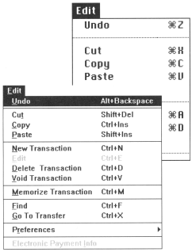
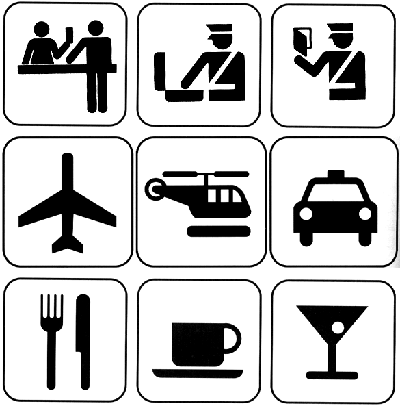

Elegance & Simplicity and
Scale, Contrast & Proportion
(material from: Designing Visual Interfaces by
Mullet and Sano)
"maximize meaning, minimize means" - Abram Games
Enhance communication by carefully selecting elements to
be emphasized
Solve the problem completely, in a highly economical way

Here is a web page showing a wide assortment of US Road signs -
http://www.trafficsign.us/
Europe: http://www.reidsguides.com/t_au/t_au_road_signs.html
and http://www.ideamerge.com/motoeuropa/roadsigns/
and http://www.elve.net/rcoulst.htm
and a good bad example: http://www.baddesigns.com/dontgo.html
and another good bad one, though this time its not the
sign's fault (I've had similar experiences in Evanston):
http://www.baddesigns.com/streetsn.html
Elegant solutions reveal an intimate understanding of
the problem and an ability to ensure that its essence is grasped
by the consumer
minimization of component parts and simplification of
relationships between the parts
Benefits of Simplicity:
- Approachability - rapidly apprehended and understood to
support immediate use
- Recognizability - less visual information, more easily
assimilated, understood, remembered
- Immediacy - greater impact because they are recognized and
understood without conscious effort
- Usability - improving approachability and memorability enhance
usability
3 Principles of Simplicity
- elements must be unified
to produce a coherent whole
- parts, and the whole, must be refined to focus the viewer's attention on
the essential aspects
- fitness of
the solution to the communication problem must be ensured at
every level

Common Errors:
- Clutter and visual noise - packing too much
information/control into a single screen makes it difficult to
organize what is there and how to move through it
- Interference between competing elements - the text in the
menus competes with the text in the menu accelerators - using an
icon for the accelerator keys makes the distinction obvious

- Using explicit structure as a crutch - adding extra boxes and
lines can help to organize the elements, but it is also a sign
that you are in trouble, and can be easily abused and over-used.
- Overly literal translation - using the familiarity of a
physical object can help people quickly understand the software
version, but the software doesn't need to have the same
limitations as the physical object.

- Excessive detail and embellishment, including graduitous
3Dness, may look cool, but may also make the text harder, or
impossible, to read.

How big should I make my interface?
http://browsersize.googlelabs.com/
London Underground Map
Slightly different higher resolution version available
at:
http://www.oxfordtube.com/uploads/Underground_Map%5B1%5D.pdf
Compare this map of the CTA in downtown Chicago:
http://www.transitchicago.com/assets/1/maps/cta_Train_Map_-_April_2011.pdf
to this map of the CTA
http://www.transitchicago.com/assets/1/clickable_system_map/200806C.htm
Line Map
Techniques:
- Reducing a
design to its essence
- Regularizing
the elements of the design
- Combining elements for maximum leverage
Reduction:
Reinforce the message by removing non-essential elements
- Determine the essential qualities (typically a short list of
adjectives) that should be conveyed by the design, along with
any fixed formal elements, such as a name or label, an essential
control, or color, texture, pattern, or image.
- Critically examine each element in the design and ask yourself
why it is needed, how it relates to the essence of the design
(identified above), and how the design would suffer without it.
If you can't answer any of these questions, remove the element.
- Try to remove the element from the design anyway. What
happens? If the design collapses, either functionally or
aesthetically, the element must be replaced. Otherwise, consider
omitting it from the final solution.
Department of Transportation Icons

here are a bunch more:
http://www.aiga.org/content.cfm/symbol-signs
Regularizing:
Establishing
a
pattern
simplifies the design by moving the viewer's experience to a
higher level of abstraction.
Reduce information by repeating elements according to a
discernable rule, principle, or rhythm
Reduce visual complexity and enhance structure and
predictability
Align or reflect elements along common axis
Standardizing or repeating sizes and spacing
Reducing components to basic geometric forms
Any irregularity will be interpreted as significant by the
user who will cheerfully ascribe it to a meaning even where
none was intended. By regularizing non-critical elements
throughout the work, you can attract the user's attention by
reliably introducing an obvious irregularity whenever
you do wish to make a distinction.
Use of regular geometric forms, simplified contours, and
muted colors wherever possible If multiple similar forms are
required, make them identical, if possible,in size, shape,
color, texture, line weight, orientation, alignment, or
spacing. Limit variation in typography to a few sizes from one
or two families. To reap the benefits of regularity, make sure
critical elements intended to stand out in the display are not
regularized
Leverage:
good example is the header for a
window
- label
- drag area
- place to put window management controls
- place to show which window has focus
- Review the functional role played by each element in the
design. (This information should be a natural product of the
reduction phase.)
- Look for situations where multiple elements are filling (or
partially filling) the same role
- Question whether an element's role could be filled as well by
an adjacent component, possibly after minor modifications.
- Combine redundant elements into a single, simpler unit or
replace the lot with a common higher-level idiom from the target
environment designed to address the situation.
Too much leverage can be bad - we talked earlier about the 70s LED
watch with multiple functions controlled by 2 small buttons:
display time/date (the display was normally off to conserve
battery power), switch into set time mode, switch into set date
mode, increase the value of the time (or date)
Scale, Contrast & Proportion
first up, some notes on the human eye
Human eye has 2 types of photosensitive receptors: cones and
rods
cones
- operate
at higher illumination levels
- provide
better spacial resolution and contrast sensitivity
- provide
colour vision
rods
- operate
at lower illumination levels, most sensitive to green
 bill sherman's diagram
bill sherman's diagram
The cones are highly concentrated at the fovea and quickly taper
off around the retina. For colour vision we have the greatest
acuity at the fovea, or approximately at the center of out field
of vision. Visual acuity drops off as we move away from the
center of the field of view. However, we are very sensitive to
motion on the periphery of our vision, so we can see movement
even if we can't see what is moving.
The rods are highly concentrated 10-20 degrees around the fovea,
but almost none are at the fovea itself - which is why if you
are stargazing and want to see something dim you can not look
directly at it.
There is also the optic nerve which is 10-20 degrees away from
the fovea which connects your eye to your brain. This is the
blind spot where there are no cones and no rods. We can not see
anything at this point and our brain compensates by filling in
that part of our vision with the surrounding colours and simple
patterns.
It would be good if the colours you choose also work for people
who are colour blind.
8 percent of men
1 percent of women
Are you colour blind? You can check on wikipedia - http://en.wikipedia.org/wiki/Ishihara_color_test
Photoshop can be used to check images (View menu, Proof Seup,
Color Blindness), as can the tool at http://colororacle.cartography.ch/
and couple good web sites to check your graphics are:
http://www.vischeck.com/vischeck/
and http://colorfilter.wickline.org/
Here is a nice set of on-line color tools:
http://www.downloadsquad.com/2008/10/09/color-me-crazy-10-best-online-color-tools/
Here is an image from my backyard run through vischeck to show
how it would look for 3 of the more common types of colour
blindness.
What
happens when we walk from a bright area into a dark area, say
into a movie theatre? When we are outside the rods are saturated
from the brightness. The cones which operate better at high
illumination levels provide all the stimulus. When we walk into
the darkened theatre the cones don't have enough illumination to
do much good, and the rods take time to desaturate before they
can be useful in the new lower illumination environment.
It takes
about 20 minutes for the rods to become very sensitive, so dark
adjust for about 20 minutes before going stargazing.
Since the
cones do not operate well at low light intensities we can not
see colour in dim light as only the rods are capable of giving
us information. The rods are also more sensitive to the blue end
of the spectrum so it is especially hard to see red in the dark
(it appears black).
To human
beings, brightness (perceived intensity) has a logarithmic
scale, not a linear scale which gives us a contrast ration of
100:1 under normal conditions and 1,000,000:1 if we dark adapt.
(material from: Designing Visual Interfaces by
Mullet and Sano)
need to achieve a balance in the relationships between
elements in the design
Scale -
relative size or magnitude of a given design element in relation
to other design elements - always relative
Contrast - noticeable
differences along a common visual dimension (shape, size, color,
position, orientation, movement)
Proportion -
ratios of dimensions
Differentiation
- contrast provides differentiation
Emphasis -
scale and contrast are used to emphasize important elements of the
design
Activity -
scale and contrast move the viewer's eye through the composition
in a predictable sequence
Interest -
scale and contrast add visual interest
Visual contrasts established by manipulating perceptual
qualities
the following are retinal variables - perceived
immediately and effortlessly - fundamental units of visual
communication
- Size
- Value (saturation)
- Orientation
- Texture
- Shape
- Position
- Hue
Information represented in a visual display is
characterized by
- Number of dimensions (things being measured)
- Length of each dimension (number of possible values in each
dimension)
- Scale of measurement for each dimension
- nominal (associative, selective) - distinct categories
should be obvious
- ordered - determine relative ordering - which one is
'more' than the other should be obvious
- quantitative - determine amount of difference between
ordered values - how much 'more' should be obvious
Nominal - User interested in categorizing
In associative perception
the viewer ignores variation in one visible dimension in reading
the remainder of the display
An associative variable does not affect the visibility of other
dimensions (e.g. we can recognize hue regardless of
orientation.) A variable is dissociative if visibility is
significantly reduced for some values along that dimension (e.g.
its hard to determine hue of a very thin line or small dot)
Hue, Orientation, Texture, Shape, Position are associative
Size and Value are dissociative - they dominate perception and
disrupt processing of other correlated dimensions
In selective perception
viewer attempts to isolate all instances of a given category and
perceptually group them into a single image. The task is to
ignore everything but the target value on the dimension of
interest - to see at a glance where all the targets are within
the display
All the variables except shape are selective

In ordered perception
the viewer must determine the relative ordering of values along a
perceptual dimension. Given any two visual elements, a natural
ordering must be clearly apparent so the element representing
'more' of the corresponding quality is immediately obvious
Position, size, and value are ordered
In quantitative perception
the viewer must determine the amount of difference between two
ordered values. The user does not need to refer to an index or key
- the relative magnitudes must be immediately apparent
Position and size are quantitative
Visual variables differ substantially in length:
- Shape is longest - almost infinite variety
- Position in 2D space is limited by display size and
resolution, but very fine grained
- Size and color 10-15
- Value and texture support less than 10
- Orientation is shortest - confusion arises if more than 4
levels are attempted
Principles:
- Clarity
- Harmony
- Activity
- Restraint
Common Errors:
Insufficient contrast
here is a nice real world example: http://www.baddesigns.com/speedo.html
Excessive contrast
Visual interference - it seems like a nice idea to show
colours in the correct colour, or a font in its font, but these
can make the text harder to read.
Spatial tension

Awkward dimensions

Techniques:
Establishing perceptual layers
- Group each item of information into a small number (7 +/- 2)
of categories according to its origin or intended use. A group
must be established for any group of items that will need to be
processed independently. Each item must be assigned to at least
one group.
- Determine the rank or importance of the various groups and
organize them into an even smaller number (e.g. 3-5) of echelons
based on this ranking
- Use appropriate perceptual variables to establish the layering
effect. Size and value can establish clear perceptual
hierarchies, while hue is most effective for non-hierarchical
grouping
- Maximize the perceptual difference between groups while
minimizing the difference within groups
- Use the squint test to ensure that elements in the same layer
group together as a unit, but that group itself can be visually
separated from the rest of the display
Sharpening visual distinctions
- Identify the ranking that need to be established across the
groups of information (see layering)
- Determine the range of variation (e.g. minimum and maximum
values or sized, number of colors, etc.) available and use as
much of it as possible in the resulting code.
- Use logarithmic rather than linear scaling across the visible
range to ensure the discriminability of contrasts at large
absolute magnitudes. Doubling each successive level is usually
sufficient.
- Use the squint test to ensure that at least the first two or
three echelons can be easily recognized 'at a glance.'
Here are some real-world examples -
a car title and a student ID:
http://www.baddesigns.com/numbers.html
Similarly
in Illinois a car title has many numbers on it. VEHICLE
IDENTIFICATION NO, ODOMETER, TITLE NO and CONTROL NO. Which one
of them is significantly larger than the others, sitting off on
its own, and coloured in bright red as opposed to black for all
the others? The CONTROL NO. The TITLE NO is buried
amongst all the others. And we will just accept that 'NO' is a
good abbreviation for number.
The UIC
student ID has 3 long numbers on it (Univ ID#, Library #, and
Card #). The Univ ID# is now coloured blue to make it stand out
from the others. In contrast credit cards only have a single
long number on the front. They want to make it easy to use so
you use their card.
Integrating figure and ground
- Determine the overall size of the figure/ground combination.
Note that designs will usually require adjustment as the overall
size is changed, since critical internal relationships are
disrupted when a figure is scaled uniformly.
- Equalize the visual weight of figure and ground. Use the
squint test to check that neither the positive or negative space
dominate.
- Provide enough space around the margins of the figure to
eliminate unwarranted visual tension.
- Position the figure correctly within the ground. The figure
should usually be centered within the ground unless
communication requirements dictate otherwise. Use the squint
test .

Think about how you present information on a resume -
how you use white space (vertical and horizontal) to set apart the
different sections, underlining and boldface to highlight certain
words
Here is some informative text ... its all one paragraph,
all the same font, the same font size:
ILLINOIS STATE FORECAST, NATIONAL WEATHER SERVICE
CHICAGO IL, 430 PM CST TUE MAR 23 1999 TONIGHT...CLEAR
NORTH...CLEARING CENTRAL...MOSTLY CLOUDY FAR SOUTH. LOWS FROM THE
UPPER 20S FAR NORTHWEST TO NEAR 40 FAR SOUTH. WEDNESDAY...MOSTLY
CLOUDY NORTHEAST...PARTLY SUNNY ELSEWHERE. HIGHS NEAR 40
NORTH...45 TO 50 CENTRAL AND NEAR 60 FAR SOUTH. WEDNESDAY
NIGHT...PARTLY CLOUDY. LOWS IN THE 20S NORTH TO 30S SOUTH.
THURSDAY...PARTLY OR MOSTLY SUNNY. HIGHS FROM NEAR 40 NORTH TO THE
5OS SOUTH. EXTENDED FORECAST... FRIDAY THROUGH SUNDAY...DRY WITH A
SLOW WARMING TREND. LOWS FROM THE 20S NORTH TO 30S SOUTH
FRIDAY...WARMING TO THE 30S NORTH TO 40S SOUTH SUNDAY. HIGHS FROM
THE 40S NORTH TO 50S SOUTH FRIDAY...GRADUALLY WARMING TO THE
MIDDLE 50S NORTH TO LOWER 60S SOUTH BY SUNDAY.
1 - Given a blank page, and without changing the font
size, lay out this text on the page in a better format
2 - Given another blank page, and starting from the
original paragraph above, and given the ability to change the font
size, lay out this text on the page in a better format
(compare this kind of formatting to what you expect to
see in a restaurant menu)
last 2/6/2012 cleaned up outdated
links